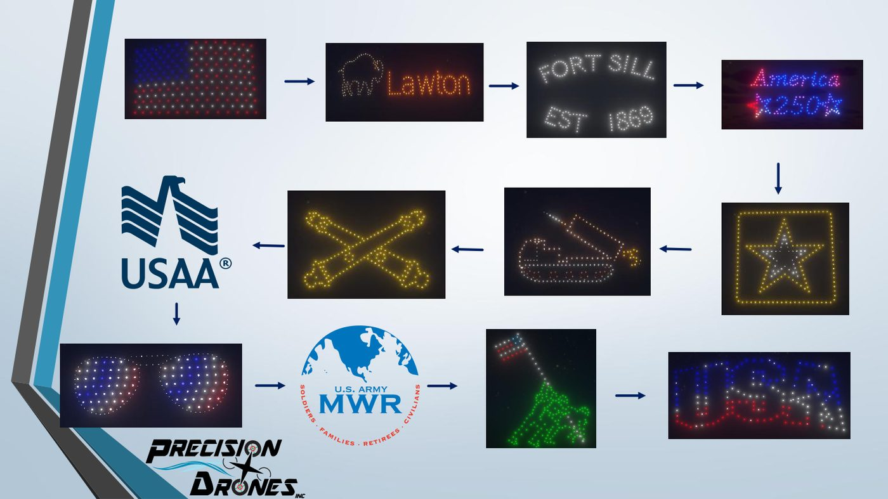
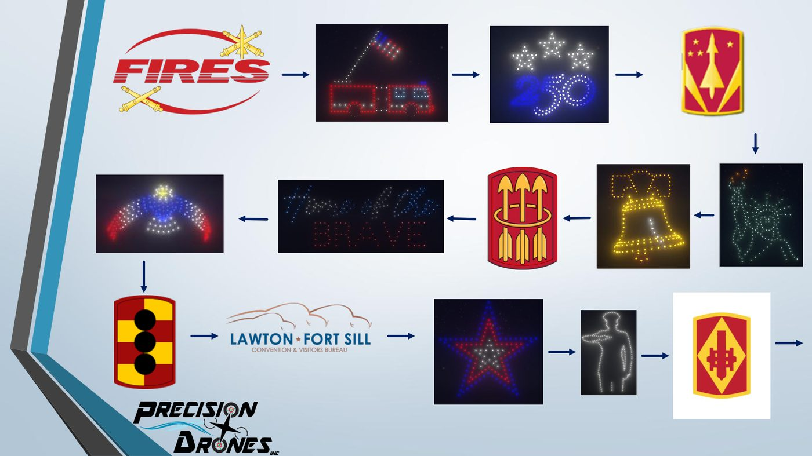
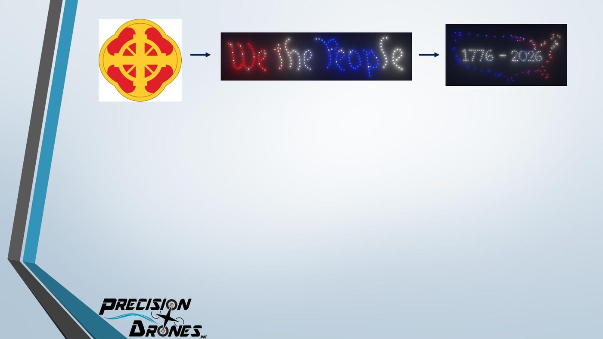
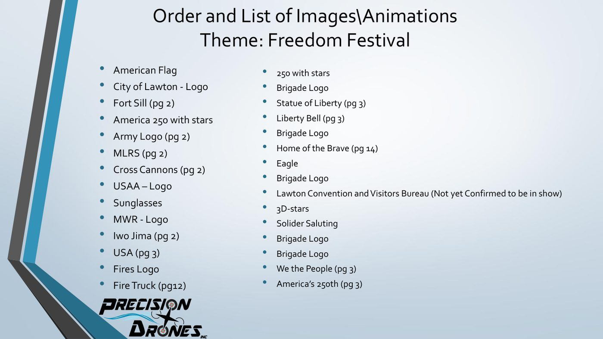

Storyboards
Every drone show I design starts as a storyboard. A brief comes in, and I turn it into a sequence: a cue sheet timed to the soundtrack, then one panel per element showing what the audience sees and how it moves. Those boards are what the client reviews and approves, round by round, before a single drone is programmed.
I've boarded shows for stadiums, city celebrations and festivals. Around twenty in 2026 alone, several in flight at once. Three of them are below, in two formats: panel-by-panel boards and a whole-show sequence flow.
The boards
UT Austin Baseball Flylight · Austin, TX · 2026
The post-game show for a crowd inside the ballpark, with a separate 7th-inning-stretch piece. The board opens on a cue sheet that locks every element to a 30-second slot, then walks through the sequence: the Texas script and flag, Bevo, and a player who steps up, points his bat at the outfield, swings and slides into home. Movement is written into each panel: stop-motion frames for the pitcher, a jersey that turns to reveal “Texas,” a cap waved toward the crowd.


Kipona — Labor Day 300 drones · Harrisburg, PA · 2025
A 12-minute family show over the Susquehanna, timed track by track. The board treats the sky as a character stage: cat eyes that blink and follow the viewer, a UFO beaming up a cow, an astronaut who drifts through space and lands on a planet, disco dancers in stop motion. Each panel carries its own direction note, and the deck ends with extra ideas the client could swap in, like a T-Rex that roars toward the audience.


Lawton Freedom Festival 200 drones · Lawton, OK · 2026
A different format: the whole show on a few slides as a flow, with every element in order and arrows carrying the eye from one to the next. It opens on the flag and the City of Lawton, moves through Fort Sill and the Army, and closes on “We the People” and 1776–2026 for America's 250th. A running order sheet sits alongside it so the client can check every logo and page reference in one place.



